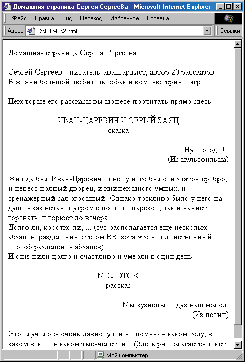
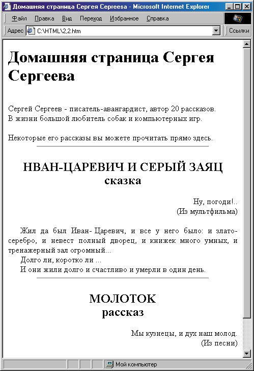
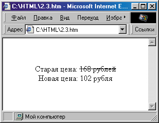
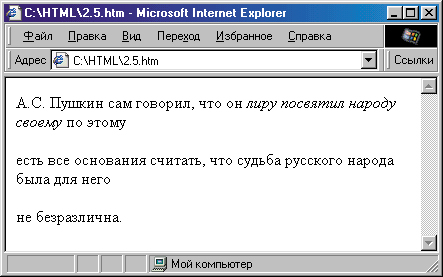
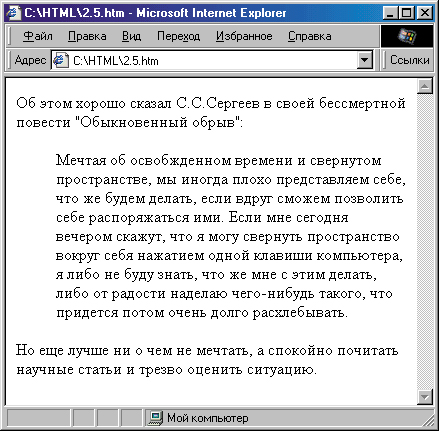
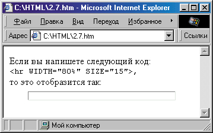

|
|
|
2. Основные средства языка HTML
2.1. Простейшее форматирование текста
В разделе 1.2 мы начали знакомиться с тем, как пишется код веб-страницы, и увидели, что ничего принципиально сложного в этом нет. Давайте сейчас продолжим знакомство с языком HTML. Для начала попробуем отформатировать текст на нашей гипотетической страничке так, чтобы его было более или менее удобно и приятно воспринимать.
В качестве примера продолжим форматирование страницы нашего несуществующего писателя Сергея Сергеева. Предположим, что за вступительным текстом, который мы начали форматировать в разделе 1.2, мы должны расположить два его рассказа (он же писатель!). Каждый рассказ имеет название, подзаголовок и небольшой эпиграф.
Известно, что в книгах названия рассказов обычно располагают по центру страницы, а эпиграф — у ее правого края. Давайте попробуем осуществить это на веб-странице. Для этого вначале введем понятие атрибутов тега. Дело в том, что почти каждый тег HTML может употребляться не только “сам по себе”. Внутри негр (то есть между угловыми скобками), кроме названия тега могут задаваться еще несколько его свойств, называемых атрибутами. Например, атрибутом разных тегов может являться цвет текста, размер шрифта и т. д.
Управление выравниванием текста
В данном случае нам потребуется такой атрибут, как выравнивание (выключка) текста. Он может употребляться с разными тегами. Поскольку на нашей страничке и заголовок, и эпиграф должны быть отделены друг от друга и от основного текста, имеет смысл употребить тег <Р> . Каждый фрагмент текста, заключенный между тегами <Р> и </Р> , будет представлять собой отдельный абзац:
<Р>Это первый абзац.</Р> <Р>Это второй абзац.</Р> <Р>Это третий абзац и т. д.</Р>
Чтобы выровнять заголовок по центру страницы, можно написать следующее:
<Р ALIGN="center">3AГOЛOBOK РАССКАЗА № !</Р>
Вы, очевидно, уже поняли, что атрибут ALIGN= означает выравнивание. Ему присвоено значение "center" для выравнивания текста по центру страницы. Между атрибутом и его значением всегда должен стоять знак равенства. Для того чтобы расположить эпиграф по правому краю, надо, соответственно, атрибуту ALIGN= присвоить значение "right":
<Р ALIGN="right">ЭПИГРАФ</P>
Теперь давайте посмотрим, как будет выглядеть вся страничка целиком.
<HTML>
<HEAD>
<META HTTP-EQUIV="Content-Type" CONTENT="text/html; charset=windows-1251">
<TITLE>Домашняя страница Сергея Cepreeвa</TITLE>
</HEAD>
<BODY>
<FONT FACE="Times New Roman"><P>Домашняя страница Сергея Сергеева<BR>
<BR>
Сергей Сергеев - писатель-авангардист, автор 20 рассказов.<BR>
В жизни большой любитель собак и компьютерных игр.<BR>
<BR>
Некоторые его рассказы вы можете прочитать прямо здесь. </P>
<P ALIGN="CENTER">ИBAH-ЦAPEBИЧ И СЕРЫЙ ЗАЯЦ<BR>
сказка</Р></P>
<P ALIGN="RIGHT">Hy, погоди!.. <BR>
(Из мультфильма)</P>
<P>Жил да был Иван-Царевич, и все у него было: и злато-серебро, и невест полный дворец, и книжек много умных, и тренажерный зал огромный. Однако тоскливо было у него на душе - как встанет утром с постели царской, так и начнет горевать, и горюет до вечера.<BR>
Долго ли, коротко ли, ... (тут располагается еще несколько абзацев, разделенных тегом BR, хотя это не единственный способ разделения абзацев)...<BR>
И они жили долго и счастливо и умерли в один день. </P>
<P ALIGN="CENTER">MOЛOTOK<BR>
рассказ</P>
<P ALIGN="RIGHT">Мы кузнецы, и дух наш молод.<BR>
(Из песни)</P>
<P>Это случилось очень давно, уж и не помню в каком году, в каком веке и в каком тысячелетии... (Здесь располагается текст рассказа) </P></FONT>
</BODY>
</HTML>
Результат показан на рис. 2.1. Как видите, это весьма похоже на то, что было задумано. Однако сразу бросаются в глаза несколько недостатков. Во-первых, абзацы в основном тексте на вид плохо отделены друг от друга, хотя и разделены тегом <BR> .

Рис. 2.1. Иллюстрация применения атрибута ALIGN
Оформление абзацев
Вообще говоря, для разделения абзацев вместо тега <BR> можно также использовать тег <Р> . Он, надо сказать, и был создан для этого. Но поскольку придумывали его не у нас в России, то он делит абзацы в соответствии с зарубежными правилами книгопечатания — между абзацами пропускается строка, а сам абзац начинается без отступа слева (“красной строки”). Такое оформление непривычно для нас, и поэтому попробуем отформатировать абзацы по-другому — без пропуска строки и с отступом слева.
Собственно, используя тег <BR> вместо тега <Р> , мы уже избежали пропуска строки перед каждым абзацем. Теперь попробуем создать отступ. в НTML изначально не было предусмотрено средств для этого, поэтому придется схитрить.
Если вы еще помните, в былые времена в примитивных текстовых редакторах некоторые использовали для отступа несколько пробелов, как на пишущей машинке. Здесь можно попробовать применить этот допотопный прием. Правда, “в лоб” он работать не будет, поскольку броузеры игнорируют лишние пробелы. Однако мы можем поставить специальный символ, называемый неразрывным пробелом. Он никогда не игнорируется, и несколько таких символов вполне могут заменить нам отступ первой строки. Для того чтобы создать неразрывный пробел, следует ввести:
Поясним, что в языке HTML подобная конструкция всегда используется для ввода так называемых специальных символов. Как только броузер встречает в тексте знак амперсенд (&), он начинает интерпретировать сле-дующие за ним буквы как код специального символа. Так продолжается до тех пор, пока не встретится точка с запятой. Специальные символы используются, в частности, для кодирования букв с различными “добав-ками” типа селиля, циркумфлекса и пр. (для текстов, например, на фран-цузском языке), ввода знаков торговой марки и авторского права, символов денежных единиц, знаков “больше” и “меньше” и т. д.
Итак, если ввести перед абзацем несколько неразрывных пробелов, то абзац отобразится с отступом первой строки.
Оформление заголовков
Посмотрим еще раз на нашу страничку. Еще один ее недостаток заключается в том, что весь текст написан шрифтом одного размера. Вообще говоря заголовки выделяют более крупным шрифтом (причем обычно полужирным). Для того чтобы выделять заголовки, в HTML существуют так называемые теги заголовков. Это <Н1>, <Н2>, <НЗ>, <Н4>, <Н5> и <Н6> (и из закрывающие теги). Для самых крупных заголовков можно использовав тег <Н1> , для заголовков помельче — <Н2> и так далее. Например, так:
<Н2>ИВАН-ЦАРЕВИЧ И СЕРЫЙ ЗАЯЦ<ВR> сказка</Н2>
Однако обратите внимание на то, что для выравнивания по центру нужно приложить дополнительные усилия, например поместить соответствующий тег внутрь тега заголовка (то есть в данном случае между тегами <Н2> и </Н2> ):
<Н2><Р ALING="сеntег">ИВАН-ЦАРЕВИЧ И СЕРЫЙ ЗАЯЦ<ВR> сказка</Р></Н2> Если этого не сделать, то заголовок будет выровнен по левому краю.
В нашем случае имеет смысл использовать для заголовков рассказа тем <Н2> , а для заголовка всей странички — тег <Н1> (общий заголовок дол жен быть крупнее). Для выравнивания общего заголовка по центру мы можем написать так:
<H1><DIV ALING="сеntег">Домашняя страница Сергея Сергеева</DIV></Н1>
Обратите внимание на то, что вместо тега <Р> для выравнивания мы: использовали тег <DIV> . Этот тег означает разделитель и определяет фрагмент, который можно наделить какими-либо стилевыми свойствами, Текст, расположенный между тегами <DIV> и </DIV> , в большинстве броу зеров также отделяется от остального текста с помощью символа перевода строки (если не заданы еще какие-либо параметры). Запомните этот тег — впоследствии нам придется употреблять его очень часто.
Пойдем дальше. Вы, наверное, обратили внимание на то, что в предыду щем примере основной текст рассказов был заключен в тег < Р ALIGN="left"> . Здесь значение "left" означает выравнивание по левому краю, однако это значение атрибута ALIGN= определено по умолчанию. То есть, для опреде-
пия абзаца, выровненного по левому краю, достаточно было просто "ставить тег <Р>. Однако текст рассказа обычно смотрится лучше, если него ровные оба края, а не только левый — мы к этому привыкли по бумажным” изданиям. Чтобы выровнять текст по обоим краям, можно добавить атрибут ALIGN= со значением "justify". Но следует иметь в виду, о такое выравнивание не поддерживалось в старых версиях броузеров. (юузеры Internet Explorer и Netscape Navigator поддерживают его только начиная со своих четвертых версий.
Горизонтальная линейка
Более, на нашей страничке хотелось бы визуально отделить рассказы от вступительного текста. Это можно сделать с помощью горизонтальной черты. В принципе, для этого достаточно в нужном месте поставить тег <BR> (он не имеет закрывающего тега). Однако в этом случае горизонтальная черта займет всю ширину страницы, что будет смотреться неопрятно. Для определения ширины горизонтальной черты можно задать атрибут WIDTH=, например, так:
<HR WIDTH="75%">
В этом случае горизонтальная линия займет 75% от полной ширины экранной страницы. Можно также определять ширину линии и в пикселах ( экранных точках). Например, запись <HR WIDTH="75"> определит ширину линии в 75 пикселов (это получится очень короткая линия). Если хотите, можете определить также толщину линии, установив атрибут SIZE=.
Некоторые проблемы могут возникнуть, если мы захотим оставить немного Свободного пространства между вступительным текстом и горизонталь ной линией (в данном случае это уместно, так как между линией и заголовком, определенным тегом <Н2> , пространство довольно большое, и желательно соблюсти некоторый баланс). Дело в том, что если поставить перед линией тег <BR> , то большинство броузеров его проигнорируют. Выход можно найти, если после <BR> вставить неразрывный пробел или вместо <BR> использовать “пустой” абзац:
<P></P><HR WIDTH="75%">
И то и другое не очень эстетично с точки зрения кода. Правда, если страничка делается для броузеров Netscape (версии 3 и более поздних), можно использовать тег <SPACER> , чтобы задать вертикальный отступ:
<SPACER TYPE="vertical" SIZE="25">
собственно говоря, это то, что нужно, но другие броузеры не поддерживают этот тег и поэтому просто проигнорируют его. Поэтому ограничимся пока тегом <BR> с неразрывным пробелом. А в главе 4 вы узнаете, как можно легко решать такие проблемы с помощью CSS (каскадных таблиц стилей).
Давайте посмотрим, что у нас получилось.
<!DOCTYPE HTML PUBLIC "-//W3C//DTD HTML 4.0 Transitional//EN">
<HTML>
<HEAD>
<title>Домашняя страница Сергея Cepreesa</title>
</head>
<body>
<h1><DIV aling="center">Домашняя страница Сергея Сергеева </div></h1>
<br> Сергей Сергеев - писатель-авангардист, автор 20 рассказов. <br>
В жизни большой любитель собак и компьютерных игр. <br> <br>
Некоторые его рассказы вы можете прочитать прямо здесь. <br>
<HR WIDTH="75%"> <H2><P ALIGN="center">ИBAH-ЦАРЕВИЧ И СЕРЫЙ ЗАЯЦ <br>
сказка</p></H2>
<p align="right">Hy, погоди!.. <BR>(Из мультфильма)</Р>
<p align="justify"> Жил да
был Иван-Царевич, и все у него было: и злато-серебро, и невест
полный дворец, и книжек много умных, и тренажерный зал огромный... <br>
Долго ли, коротко ли ... <br>
И они жили долго и счастливо
и умерли в один день.</Р>
<HR WIDTH="75%">
<h2><p align="center">MOЛOTOK <br> рассказ</p></h2>
<p ALIGN="right">Mы кузнецы, и дух наш молод. <br> (Из песни)</P>
Это
случилось очень давно, уж и не помню в каком году, в каком веке
и в каком тысячелетии... (Здесь располагается текст рассказа)
</BODY>
</HTML>
Результат наших трудов представлен на рис. 2.2. Что ж, страничка посте пенно становится все лучше. Но, не правда ли, хочется сделать вступи-

Рис. 2.2. Применение заголовочных стилей
тельный текст чуть крупней и выделить в нем некоторые моменты? Кроме того, текст эпиграфа обычно дается чуть более мелким шрифтом, а подзаголовки и подписи под эпиграфом неплохо бы выделить курсивом.
Управление шрифтом
Чтобы изменить размер шрифта, можно использовать тег <FONT> с атрибутом SIZE=. Вообще говоря, WWW-консорциум не особенно рекомендует использовать тег <FONT> в HTML 4.0. Мы считаем, что злоупотреблять им действительно не нужно, когда есть возможность использования каскадных таблиц стилей CSS, о чем мы поговорим в главе 4. Однако иногда для мелких корректив этот тег бывает очень удобен. Например, если мы поставим перед вступительным текстом тег
<FONT SIZE="+1">
f поcле него — закрывающий тег </FONT>, то весь текст, оказавшийся между этими тегами, будет отображен шрифтом на один “уровень” круп-нее обычного.
Возникает вопрос: а каков размер “обычного” шрифта? В языке HTML для тега <FONT> были определены семь основных размеров шрифта, измеряемых не в пунктах, а в некоторых условных единицах — от 1 до 7. Как правило, обычный шрифт имеет размер “З”, если не определено иное с помощью тега <BASEFONT> (например, так: <BASEFONT SIZE="6">) . В послед- нее время такое определение размеров не рекомендуется, поскольку с помощью CSS можно определить размеры шрифта в любых привычных единицах.
Необходимо различать записи <FONT SIZE="+1" и <FONT SIZE="1"> . В пер- вом случае указывается относительный размер шрифта, а во втором — абсолютный. Соответственно, для временного уменьшения размера шрифта можно использовать запись <FONT SIZE="-1"> . Можно использо- вать также значения "+2", "-2", "+3" и т. д. Кстати, для увеличения или уменьшения шрифта на одну единицу можно использовать также теги <BIG> и <SMALL> (они используются с закрывающими тегами).
Теперь давайте выделим еще некоторые элементы нашей страницы. Чтобы отобразить подзаголовки рассказов курсивом, их можно поместить между тегами <I> и </I> :
<Н2><Р АLIGN+"center">ИВАН-ЦАРЕВИЧ И СЕРЫЙ ЗАЯЦ<ВК> <I>сказка</I></Р></Н2>
Такой же результат, как тег <I> , дает тег <ЕМ> . Отличие их в том, что тег <ЕМ> определяет лишь логически выделенный фрагмент, который броузеры обычно отображают курсивом, а тег <I> — это явное указание на кур сив. Впрочем, это уже несущественные детали.
Мы можем также выделить фамилию нашего героя во вступительном тексте полужирным шрифтом, используя тег <В> :
<В>Сергей Сергеев</В> - писатель-авангардист, автор 20 рассказов.
Такой же результат даст использование тега <STRONG> . Более гибко управлять выделением можно с помощью CSS
Для выделения какой-либо части текста можно использовать подчеркивание, поместив текст между тегами <U> и </U> . Однако злоупотреблять этим не следует, поскольку подчеркнутый текст в WWW ассоциируется с гиперссылками и читатель будет весьма разочарован, когда щелчок мыши по подчеркнутому тексту ни к чему не приведет.
Иногда требуется также зачеркнуть отдельные слова в тексте (например, при снижении цен на товары обычно указывают старую цену в зачеркнутом виде). Для этого служит тег <STRIKE>:
Старая цена: <STRIKE>168 рублей </STRIKE> Новая цена: <FONT SIZE="+1">102 рубля</FONТ>
Результат представлен на рис. 2.3. Некоторые броузеры понимают также сокращенное написание этого тега — <S> . Однако для хорошей совмести мости пользуйтесь лучше тегом <STRIKE> (пока возможно, совместимость
со всеми броузерами все же лучше поддерживать, тем более что на данном этапе это совсем несложно).

Рис. 2.3. Применение зачеркнутого текста
Однако вернемся к нашему герою Сергею Сергееву. В таком виде страничка смотрится уже неплохо. Но вы, наверное, обратили внимание на то, что в Интернете почти не встречаются странички, написанные черными буквами на и белом фоне. Встретив такую страницу, пользователь, скорее всего, решит, что это что-то очень скучное. Кроме того, белый фон слишком ярок, а его контраст с черными буквами слишком велик, что быстро утомляет глаза. Поэтому давайте попытаемся изменить цвет фона и текста.
Цветовое оформление
Для этого проще всего установить соответствующие атрибуты тега <BODY> . Атрибут ТЕХТ= определяет цвет текста на страничке, а атрибут BGCOLOR= — цвет фона. Названия цветов можно вводить по названиям, например: "black" (черный), "white" (белый), "yellow" (желтый), "green" (зеленый), "fuchsia" (сиреневый) и т. д. Существует довольно много названий цветов, которые можно использовать в HTML, однако можно получить любой из цветов, введя его шестнадцатеричный номер. Причем это не так сложно, как может показаться.
Шестнадцатеричный номер цвета должен состоять из шести цифр. Первые две означают интенсивность красной составляющей, вторые две — зеленой и последние две — синей. Таким образом, красный цвет обозначается как FFOOOO, зеленый — OOFFOO и синий — OOOOFF. Цвет с номером 000000 — чер- ный (нет ни одной составляющей), a FFFFFF — белый. Если это понятно, то можно поэкспериментировать с интенсивностью каждой составляющей отдельно. Если FFOOOO — это красный цвет, то 880000 — уже темно-красный, а 440000 — красно-коричневый; 220000 похож на коричневый, а 110000 — черный с красноватым оттенком. Точно так же OOFFOO — это яркий зеле ный, ООААОО — приятный лиственно-зеленый, 007700 — темно-зеленый,
003300 — очень темный зеленый и 001100 — черный с зеленоватым оттенком. Немного поэкспериментировав с интенсивностью каждой составляющей, можно попробовать смешивать цвета. Таким образом, можно научиться быстро вводить цвет в цифровом виде. Конечно, в различных HTML-редакторах можно выбирать цвет из палитры обычным способом, “на глаз”, но всегда лучше знать точно, что происходит в коде. Кстати, если кому-то не по душе шестнадцатеричные числа, то с помощью CSS он сможет определять цвет и с помощью обычных, десятичных чисел.
Перед шестнадцатеричным номером цвета необходимо поставить знак #. Например, для нашей странички цвета можно определить так:
<BODY BGCOLOR="#BABAAO" TEXT="#1D1D18">
Это даст при просмотре одинаковый коричневатый оттенок и цвета, и фона, однако цвет фона будет более тяготеть к серебряно-белому, а цвет текста — к темно коричневому. Давайте посмотрим, что у нас получилось.
<!DOCTYPE HTML PUBLIC "-//W3C//DTD HTML 4.0 Transitional//EN">
<HTML>
<HEAD>
<title>Домашняя страница Сергея Cepreesa</title>
</head>
<body bgcolor="#babaa0" text="1d1d18">
<h1><DIV aling="center">Домашняя страница Сергея Сергеева </div></h1>
<br> Сергей Сергеев - писатель-авангардист, автор 20 рассказов. <br>
В жизни большой любитель собак и компьютерных игр. <br> <br>
Некоторые его рассказы вы можете прочитать прямо здесь. <br>
<HR WIDTH="75%"> <H2><P ALIGN="center">ИBAH-ЦАРЕВИЧ И СЕРЫЙ ЗАЯЦ <br>
сказка</p></H2>
<p align="right">Hy, погоди!.. <BR>(Из мультфильма)</Р>
<p align="justify"> Жил да
был Иван-Царевич, и все у него было: и злато-серебро, и невест
полный дворец, и книжек много умных, и тренажерный зал огромный... <br>
Долго ли, коротко ли ... <br>
И они жили долго и счастливо
и умерли в один день.</Р>
<HR WIDTH="75%">
<h2><p align="center">MOЛOTOK <br> рассказ</p></h2>
<p ALIGN="right">Mы кузнецы, и дух наш молод. <br> (Из песни)</P>
Это
случилось очень давно, уж и не помню в каком году, в каком веке
и в каком тысячелетии... (Здесь располагается текст рассказа)
</BODY>
</HTML>
Он все более и более становится похожим на нормальную веб-страницу, которую можно вполне адекватно воспринять, случайно наткнувшись на нее в WWW. Однако пока что это только отформатированный текст, в котором отсутствуют самые главные элементы, являющиеся основой структуры WWW - гиперссылки. О них пойдет речь в следующем разделе, а пока давайте рассмотрим еще несколько редко Используемых возможностей форматирования текста в HTML.
Дополнительные варианты оформления
отображают текст, находящийся между тегами <CITY></CITY> курсивом. Например, если вы напишете следующее"
А.С. Пушкин сам говорил,
что он <CITY>лиру посвятил народу
своему</CITY> по этому есть все основания считать, что судьба русского народа
была для него не безразлична.
то большинство броузеров отобразят это так. как показано на рис 2.5(ниже)

Об этом хорошо сказал С.С.Сергеев в своей бессмертной повести "Обыкновенный обрыв":
Мечтая об освобжденном времени и свернутом пространстве, мы иногда плохо представляем себе, что же будем делать, если вдруг сможем позволить себе распоряжаться ими. Если мне сегодня вечером скажут, что я могу свернуть пространство вокруг себя нажатием одной клавиши компьютера, я либо не буду знать, что же мне с этим делать, либо от радости наделаю чего-нибудь такого, что придется потом очень долго расхлебывать.
Но еще лучше ни о чем не мечтать, а спокойно почитать научные статьи и трезво оценить ситуацию.

Рис. 2.5. Применение длинной цитаты
также отобразить и обычные типографские кавычки (“? ”) вместо машинописных (" "). Запись Книга « Путеводитель по Атлантиде &raquо; отобразится в броузере так:
Книга “Путеводитель по Атлантиде”
Теперь давайте представим себе, что нам надо воспроизвести на веб-страничке фрагмент кода-HTML и проиллюстрировать его отображение. Причем код HTML мы хотим выделить моноширинным шрифтом (как это обычно и делается, например, в этой книге). Для этого можно применить тег <CODE> , как показано ниже.
Если вы напишете следующий код: <br>
<code> <hr WIDTH="80%" SIZE="15">,
</code><br> то это отобразится так:
<HR WIDTH="80%" SIZE="15">
Нa рис. 2.6 показано, как это отобразится в броузере. Помимо тега <CODE> , обратите внимание на употребление специальных символов < и > для отображения угловых скобок,
Вместо тега <CODE> можно также употребить и тег <ТТ> . Разница между ними такая же, как между тегами <ЕМ> и <I> . То есть, тег <CODE> определяет логический фрагмент, который обычно выводится моноширинным!
То есть шрифтом, в котором все символы имеют одинаковую ширину, на манер пишущей машинки.

Рис. 2.6. Отображение исходного кода программ в броузере
шрифтом, как код, а тег <ТТ> просто применяет к фрагменту моноширинный шрифт. Разница, прямо скажем, небольшая.
Для отображения больших фрагментов кода существует еще один тег — <LISTING> . Весь текст, заключенный между ним и его закрывающим тегом, отображается не просто моноширинным шрифтом, а еще и с пропуском строки до и после кода, и обычно более мелким шрифтом. Кроме того, в этом тексте сохраняется исходное форматирование (как при использовании тега <PRE> ). Однако использование этого тега уже давно не рекомендовано WWW-консорциумом.
|
|
|